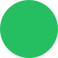

What happens when a line worker at a packaging factory plans the perfect crime down to the smallest detail?
מה קורה כשעובד פס ייצור במפעל אריזות מתכנן את הפשע המושלם עד הפרט האחרון?
ماذا يحدث عندما يخطّط عاملٌ على خط الإنتاج في مصنع تغليف للجريمة الكاملة حتى أدقّ التفاصيل؟

Motion
Graphic